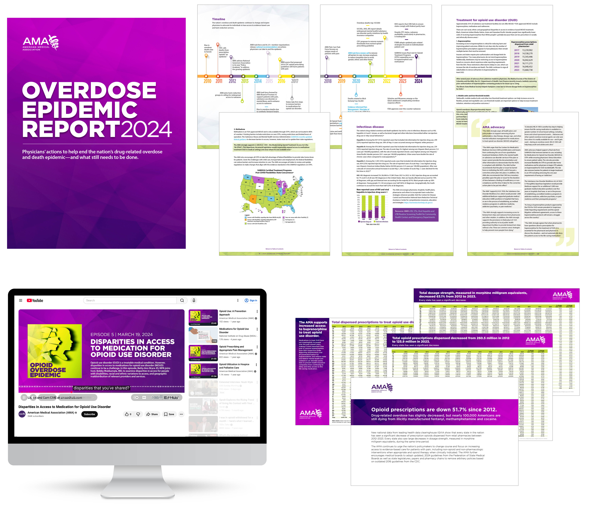
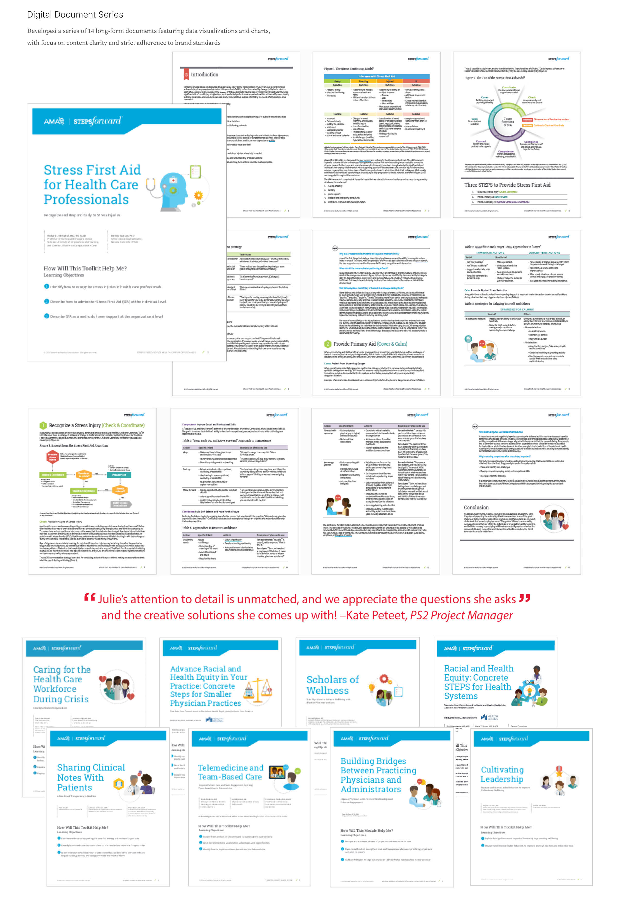
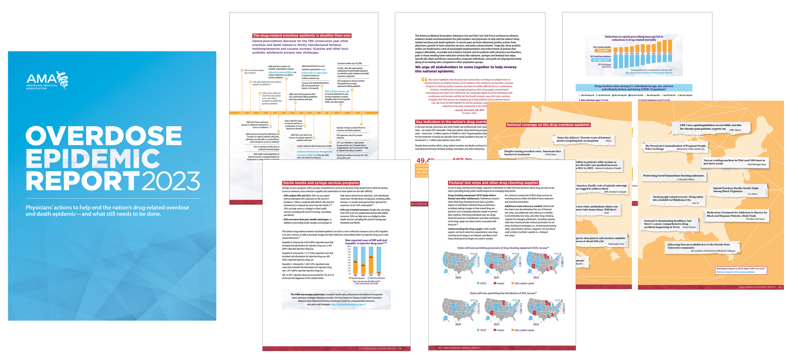

Design Lead — Brand, Print, Digital — American Medical Association
Led the design of multi-channel communications supporting the nation's largest physician organization. Work spanned annual reports, advocacy publications, educational toolkits and data-driven research documents across print and digital channels.
Overdose Epidemic Report — Designed annually for five years, this data-rich publication tracks the nation's opioid crisis through charts, infographics and visualizations. Each edition required strict brand adherence, content clarity and close collaboration with researchers and editors.



2024 Annual Report
Copy by Christian Racoma
PS2 Revenue Cycle Management
Copy by Steve Brown